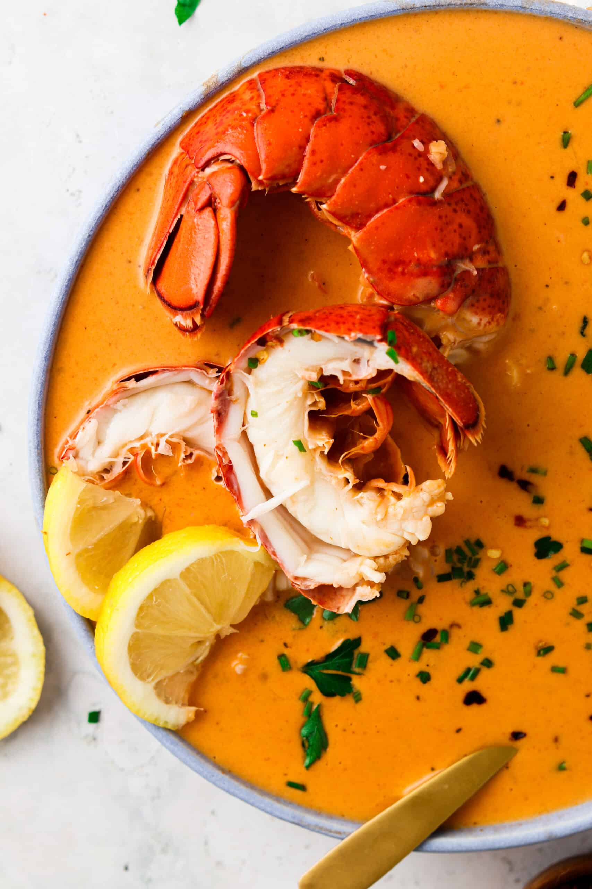

Meowscular Chef's Platter: Lobster Bisque

Image source
Hot and delicious lobster bisque
Serves: 4
Ingredients:
- 1 medium lobster (can substitute with lobster tails)
- 1 can (5.5 oz) tomato paste/canned tomatoes
- vegetable oil
- 5 leek, chopped
- 1 onion or 2 shallots, diced
- 4 cloves garlic
- 2 oz or 40 ml brandy/white wine
- ½ cup bone/seafood stock
- 1.5 oz or 50 ml heavy cream/coconut milk
- 1 bay leaf
- 1 tsp dried thyme
- 1 Tbsp melted butter
Steps:
- Boil the lobster in large pot for 8-10 minutes.
- Cut lobster with a sharp knife and carefully remove all the meat out of the shell.
- Heat on medium oil in the pan. Add lobster meat and lobster shells. Fry for 1 minute.
- Add onions, leek and garlic and cook for 5 more minutes.
- Deglaze with brandy and let it cook few more minutes, until all alcohol burns out (you may want to use kitchen torch).
- Add tomato paste, cook for 2 minutes.
- Take out biggest chunks of lobster meat and tail. Add stock and herbs. Cook on low heat for 40 minutes.
- Optionally, use blender to make the soup smoother. You can strain it afterwards.
- Add cream/coconut milk and mix.
- Dice lobter meat into pieces as large as you prefer. Fry in butter until nice and golden.
- Pour bisque into plates. Add fried lobster meat and dress with lobter tail.
Back to main